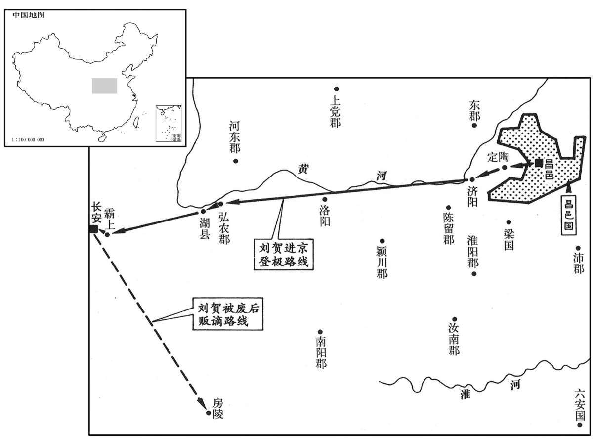
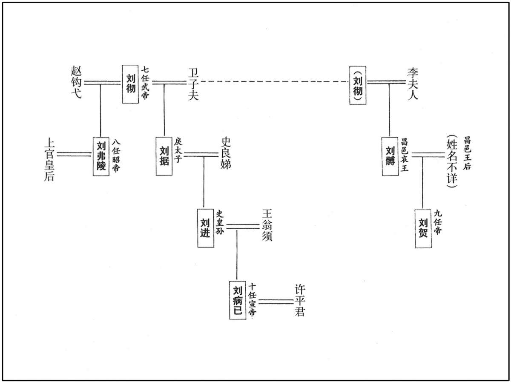
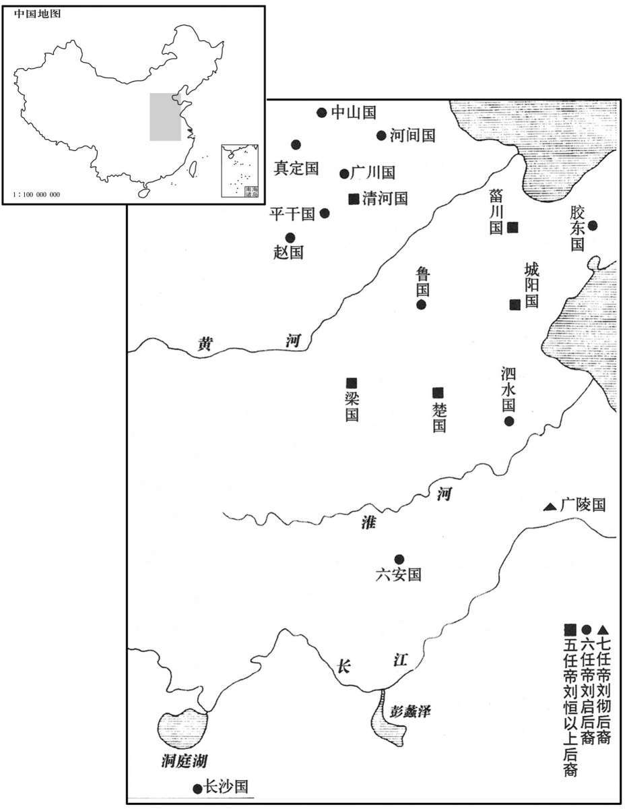

公元前74年资治通鉴：本年记事、原文与白话对照
按原书编年位置阅读；追叙和史论不等于本年发生的事件。白话采用所据译本，缺译不以生成译文补齐。
卷24 · 本年记事
公元前74年 · 汉孝昭皇帝孝昭皇帝下元平元年
孝昭皇帝下元平元年〔（丁未、前七四）〕
本年事件索引（现代整理）
- 汉减口赋三成
- 昭帝崩无嗣，霍光舍广陵王迎立昌邑王贺
- 龚遂劝昌邑王读书守礼，王旋即放纵如故
- 龚遂力谏昌邑王远离群小，王遣散所荐侍郎
- 龚遂以异象警告昌邑王，王仍不改过
- 昌邑王奉诏入京，王吉劝其哀丧政事听霍光
- 昌邑王途经湖县，强买女子载车被龚遂责止
- 龚遂依礼劝昌邑王入宫哭丧，王勉强照办
- 汉葬昭帝于平陵
- 昌邑王即位后纵欲荒淫，龚遂再谏无效
- 龚遂借青蝇梦劝昌邑王罢黜谗臣
- 张敞上书谏昌邑王，王不听
- 田延年劝霍光援引伊尹废太甲故事
- 夏侯胜直谏昌邑王，霍光因此更重儒生
- 杨敞夫人劝夫支持霍光废立之议
- 田延年拔剑督促群臣共议废昌邑王
- 霍光率群臣奏请上官太后废昌邑王贺
- 霍光奉诏宣读罪状，昌邑王交回玺绶
- 昌邑王贺归藩，封邑赐财而国除
- 昌邑旧臣二百余人以不谏王罪被诛，王式获减死
- 霍光命夏侯胜以尚书教授上官太后
- 追叙卫太子孙刘病已在巫蛊案后幸免
- 丙吉拒绝使者入狱屠杀，保全皇曾孙
- 丙吉托付皇曾孙，史贞君抚养病已
- 皇曾孙病已长大，受诗经并娶许广汉之女
- 丙吉劝霍光立武帝曾孙病已为嗣
- 霍光奏立病已为帝，是为宣帝
- 侍御史严延年劾霍光专权，群臣愈加敬惮
- 丞相杨敞卒
- 汉大赦天下
- 蔡义任丞相
- 宣帝立许倢伃为后，以求“故剑”
- 上官太后迁居长乐宫，设屯卫

本年形势与背景参考图

本年形势与背景参考图

本年形势与背景参考图
春，二月，诏减口赋钱什三。〔如淳曰：汉仪注：民年七岁至十四，出口赋钱人二十三：二十钱以食天子，其三钱者武帝加口钱以补车骑马。〕
春季，二月，汉昭帝下诏书将七岁至十四岁百姓交纳的口赋减少十分之三。
夏，四月，癸未，帝崩于未央宫；〔臣瓒曰：寿二十三。〕无嗣。时武帝子独有广陵王胥，大将军光与群臣议所立，咸持广陵王。王本以行失道，先帝所不用；光内不自安。郎有上书言：“周太王废太伯立王季，文王舍伯邑考立武王，〔师古曰：太伯者，王季之兄；伯邑考，文王长子也。舍，读曰舍。〕唯在所宜，虽废长立少可也。〔长，知两翻。少，诗照翻。〕广陵王不可以承宗庙。”言合光意。光以其书示丞相敞等，擢郎为九江太守。〔九江郡属扬州，唐濠、寿、庐、滁、和州地。守，式又翻。〕即日承皇后诏，遣行大鸿胪事少府乐成、宗正德、光禄大夫吉、中郎将利汉〔乐成，史乐成。德，刘德。吉，丙吉。利汉，不知其姓。〕迎昌邑王贺，乘七乘传〔文帝之入立也，乘六乘传；今乘七乘传。传，张恋翻。〕诣长安邸。〔诸王国皆置邸长安，此谓长安之昌邑邸也。〕光又白皇后，徙右将军安世为车骑将军。
夏季，四月癸未（十七日），汉昭帝在未央宫驾崩，没有儿子。当时，汉武帝的儿子只有广陵王刘胥还在，大将军霍光与群臣商议立谁为新皇帝，大家都认为应当立广陵王。广陵王本来因行为不合礼法，汉武帝不喜欢他，所以霍光心中感到不安。有一位郎官上书朝廷指出：“周太王废弃年长的儿子太伯，立太伯的弟弟王季为继承人；周文王舍弃年长的儿子伯邑考，立伯邑考的弟弟周武王为继承人。这两个事例说明，只要适合继承皇位，即使是废长立幼也完全可以。广陵王不能继位。”这道奏章的内容正合霍光的心意。霍光将奏章拿给丞相杨敞等人观看，并提升这位郎官作了九江太守。当日，由上官皇后颁下诏书，派代理大鸿胪职务的少府乐成、宗正刘德、光禄大夫丙吉、中郎将利汉用七辆驿车将昌邑王刘贺迎接到长安的昌邑王官邸。霍光又禀明皇后，调右将军张安世为车骑将军。
贺，昌邑哀王之子也，〔哀王，名髆，武帝子也。〕在国素狂纵，动作无节。武帝之丧，贺游猎不止。尝游方与，〔方与县本属山阳郡，武帝以山阳为昌邑王国，方与县属焉。方，音房。与，音豫。〕不半日驰二百里。中尉琅邪王吉上疏谏曰：“大王不好书术而乐逸游，〔好，呼到翻。乐，五孝翻，又音洛。〕冯式撙衔，〔冯，读曰凭。臣瓒曰：撙，促也。师古曰：撙，挫也，音子本翻。〕驰骋不止，口倦呼咤，〔师古曰：咤，亦咤字也，音竹驾翻。〕手苦于棰辔，〔师古曰：棰，马策。〕身劳呼车舆，朝则冒雾露，〔师古曰：冒，莫北翻，犯也。〕昼则被尘埃，〔被，皮义翻。〕夏则为大暑之所暴炙，〔暴，步木翻。〕冬则为风寒之所匽薄，〔师古曰：匽，与偃同，言遇疾风则偃靡也。薄，言迫也。〕数以耎脆之玉体〔师古曰：耎，柔也，音而兖翻。脆，音此芮翻。〕犯勤劳之烦毒，非所以全寿命之宗也，又非所以进仁义之隆也。〔师古曰：宗，尊也。隆，高也。〕夫广厦之下，细旃之上，〔师古曰：广厦，大屋也。旃，与毡同。〕明师居前，劝诵在后，上论唐、虞之际，下及殷、周之盛，考仁圣之风，习治国之道，〔治，直之翻。〕䜣䜣焉发愤忘食，〔䜣，与欣同。〕日新厥德，其乐岂衔橛之间哉！〔乐，音洛；下同。〕休则俛仰屈伸以利形，〔师古曰：形，形体也。俛，音免。〕进退步趋以实下，〔如淳曰：今人不行，则膝以下虚弱不实。〕吸新吐故以练臧，〔师古曰：臧，五藏也。练，练其气也。臧，古藏字通，音徂浪翻。〕专意积精以适神，〔师古曰：适，和也。〕于以养生，岂不长哉！大王诚留意如此，则心有尧、舜之志，体有乔、松之寿，〔师古曰：仙人伯乔及赤松子也。〕美声广誉，登而上闻，则福禄其臻〔师古曰：臻，至也。〕而社稷安矣。皇帝仁圣，至今思慕未怠，〔师古曰：皇帝，谓昭帝也。言武帝晏驾未久，故尚思慕。〕于宫馆、囿池、弋猎之乐未有所幸，大王宜夙夜念此以承圣意。诸侯骨肉，莫亲大王，大王于属则子也，于位则臣也，一身而二之责加焉。恩爱行义，孅介有不具者，〔行，下孟翻；下同。孅，与纤同，息廉翻。〕于以上闻，非飨国之福也。”王乃下令曰：“寡人造行不能无惰，中尉甚忠，数辅吾过。”〔数，所角翻。〕使谒者千秋赐中尉牛肉五百斤，酒五石，脯五束。〔孔颖达曰：脯训始，始作即成也；修训治，治之乃成。郑注腊人云：薄析曰脯；捶而施姜桂曰锻修。〕其后复放纵自若。
刘贺为昌邑哀王刘之子，他在封国中一向狂妄放纵，所作所为毫无节制。在汉武帝丧期中，刘贺依旧出外巡游狩猎不止。他曾经出游方与县，不到半天时间就驰骋了二百里远。中尉、琅邪人王吉上书劝说道：“大王不喜欢研读经书，却专爱游玩逸乐，驾驭着马车不停地驰骋，嘴因吆喝而疲倦，手因握缰挥鞭而疼痛，身体因马车颠簸而劳苦，清晨冒着露水雾气，白昼顶着风沙尘土，夏季忍受着炎炎烈日的烤晒，冬天被刺骨寒风吹得抬不起头来，大王总是以自己柔软脆弱的玉体，去承受疲劳痛苦的熬煎，这不能保全宝贵的寿命，也不能促进高尚的仁义品德。在宽敞的殿堂之中，细软的毛毡之上，在明师的指导下背诵、研读经书，讨论上至尧、舜之时，下至商、周之世的兴盛，考察仁义圣贤的风范，学习治国安邦的道理，欣欣然发奋忘食，使自己的品德修养每天都有新的提高，这种快乐，难道是驰骋游猎所能享受到的吗？休息的时候，作些俯仰屈伸的动作以利于形体，用散步、小跑等运动来充实下肢；吸进新鲜空气，吐出腹中浊气以锻炼五脏；专心专意，积聚精力，以调和心神。用这样的方法进行养生，怎能不长寿呢！大王如果留心于此道，心中就会产生尧、舜的志向，身体也能像伯乔、赤松子一般长寿，美名远扬，让朝廷闻知，大王崐就会福禄一齐得到，封国就安稳了。当今皇上仁孝圣明，至今思念先帝不已，对于修建宫殿别馆、园林池塘或享受巡游狩猎等事一件未做，大王应日夜想到这一点，以符合皇上的心意。在诸侯王中，大王与皇上的血缘关系最近，论亲属关系，大王就如同是皇上的儿子，论地位，大王是皇上的臣僚，一人兼有两种身分的责任。因此，大王施恩行义，如有一点不周全，被皇上知道，都不是国家之福。”刘贺阅读之后，下令说：“我的所作所为确有懈怠之处，中尉甚为忠诚，多次弥补我的过失。”于是命负责宾客事务的侍从千秋前去赏赐中尉王吉牛肉五百斤、酒五石、干肉五捆。然而，刘贺后来依然放纵如故。
郎中令山阳龚遂，忠厚刚毅，有大节，〔龚，姓也。左传，晋有大夫龚坚。〕内谏争于王，外责傅相，引经义，陈祸福，至于涕泣，蹇蹇亡已，〔争，读曰诤。相，息亮翻。亡，古无字通。师古曰：蹇蹇，不阿顺之意。易曰：王臣蹇蹇。〕面剌王过。王至掩耳起走，曰：“郎中令善愧人！”〔师古曰：愧，古愧字也。愧，辱也。〕王尝久与驺奴、宰人游戏饮食，〔驺，导车而撝诃者也。宰人，掌膳食者也。驺，侧鸠翻。〕赏赐无度，遂入见王，涕泣膝行，左右侍御皆出涕。王曰：“郎中令何为哭？”遂曰：“臣痛社稷危也！愿赐清闲，竭愚！”王辟左右。〔师古曰：闲，读曰闲。辟，音辟。〕遂曰：“大王知胶西王所以为无道亡乎？”〔胶西王，谓于王端也。〕王曰：“不知也。”曰：“臣闻胶西王有谀臣侯得，王所为儗于桀、纣也，〔儗，与拟同。师古曰：儗，比也。〕得以为尧、舜也。王说其谄谀，常与寝处，〔说，读曰悦。处，昌吕翻。〕唯得所言，以至于是。〔师古曰：唯用得之邪言，故至亡。〕今大王亲近群小，〔近，其靳翻。〕渐渍邪恶〔渐，子廉翻。渍，疾智翻。〕所习，存亡之机，不可不慎也！臣请选郎通经有行义者与王起居，坐则诵诗、书，立则习礼容，宜有益。”王许之。遂乃选郎中张安等十人侍王。居数日，王皆逐去安等。〔去，羌吕翻；下同。〕
郎中令山阳人龚遂忠厚刚毅，一向坚持原则，一方面不断规劝刘贺，一方面责备封国丞相、太傅没有尽到责任、他引经据典，陈述利害，说到声泪俱下，不断地冒犯刘贺，当面指责他的过失。刘贺甚至捂着耳朵起身离去，说道：“郎中令专门揭人短处！”刘贺曾经与他的车夫和厨师在一起长时间地游戏娱乐，大吃大喝，毫无节制地赏赐他们，龚遂入宫去见刘贺，哭着用双膝走到刘贺面前，连刘贺的左右侍从也全都感动得流下眼泪。刘贺问道：“郎中令为什么哭？”龚遂说：“我为社稷的危亡而痛心！希望您赐给我一个单独的机会，我将详细陈说我的看法！”刘贺命左右之人全部退出，龚遂说道：“大王可知道胶西王刘端为什么会因大逆不道罪而灭亡吗？”刘贺说：“不知道。”龚遂说：“我听说胶西王有一个专会阿谀奉承的臣子名叫侯得，胶西王的所作所为像夏桀、商纣一样暴虐，而侯得却说是像尧、舜一样贤明。胶西王对侯得的阿谀谄媚非常欣赏，经常与他住在一起。正是因为胶西王只听信侯得的奸邪之言，以至于落得如此下场。而今大王亲近奸佞小人，已经逐步沾染恶习，这是存亡的关键，不能不慎重对待！我请求挑选通晓经书、品行端正的郎官与大王一起生活，坐则诵读《诗经》、《尚书》，立则练习礼仪举止，对大王是会有益处的。”刘贺应允。于是龚遂选择郎中张安等十人侍奉刘贺。可是没过几天，张安等就全被刘贺赶走了。
王尝见大白犬，颈以下似人，冠方山冠而无尾，〔方山冠，以五采縠为之，前高七寸，后高三寸，长八寸，乐舞人服之。冠方之冠，古玩翻。考异曰：昌邑王传云“无头”，五行志云“无尾”，且云“不得置后之象”。若颈以下似人而无头，何以辨其为犬，且安所施冠！盖传误也。〕以问龚遂；遂曰：“此天戒，言在侧者尽冠狗也，〔言王左右之人皆狗而冠也。〕去之则存，不去则亡矣。”后又闻人声曰“熊”！视而见大熊，左右莫见，以问遂；遂曰：“熊，山野之兽，而来入宫室，王独见之，此天戒大王，恐宫室将空，危亡象也。”王仰天而叹曰：“不祥何为数来！”遂叩头曰：“臣不敢隐忠，数言危亡之戒；大王不说。夫国之存亡，岂在臣言哉！愿王内自揆度。〔数，所角翻；下同。说，读曰悦。度，徒洛翻。〕大王诵诗三百五篇，人事浃，〔浃，即协翻，洽也，彻也。〕王道备。王之所行，中诗一篇何等也？〔中，竹仲翻。师古曰：言王所行皆不合法度，王自谓当于何诗之文也。〕大王位为诸侯王，行污于庶人，〔行，下孟翻。师古曰：污，浊秽。〕以存难，以亡易，〔易，以豉翻。〕宜深察之！”后又血污王坐席，王问遂；遂叫然号〔污，乌故翻。号，户高翻。〕曰：“宫空不久，妖祥数至。血者，阴忧象也，宜畏慎自省！”〔省，悉景翻。〕王终不改节。
刘贺曾经见到一只白色大狗，脖颈以下长得与人相似，头戴一顶跳舞的人戴的“方山冠”，没有尾巴。刘贺为此事向龚遂询问，龚遂说：“这是上天的警告，说您左右的亲信之人都是戴着冠帽的狗，赶走他们就能生存，不赶走他们就会灭亡！”后来，刘贺又听到一个人的声音叫喊：“熊！”刘贺一看，果然见到一只大熊，可左右侍从却谁也没看见。刘贺又向龚遂询问，龚遂说：“熊是山野中的野兽，竟来到王宫之中，又只有大王一人看到，这是上天警告大王，恐怕王宫将要空虚，是危亡的征兆！”刘贺仰天长叹，说道：“不祥之兆为何接连到来！”龚遂叩头说道：“忠心使我不敢隐瞒真相，所以几次提到危亡的警告，使大王感到不快。然而国之存亡，又岂是我的话所能决定的！希望大王自己好好想想。大王诵读《诗经》三百零五篇，其中说道，只有‘人事’恰当，‘王道’才能周备。大王的所作所为，与《诗经》的哪一篇相符崐合呢！大王身为诸侯王，行事却比平民百姓污浊，想要生存困难，想要灭亡却是容易的，希望大王深思！”后来，又发现在刘贺的王座上出现血污，刘贺再问龚遂，龚遂大声号叫道：“妖异之兆不断出现，王宫空虚就在眼前！血为阴暗中的凶险之象，大王应有所畏惧，谨慎反省！”然而刘贺的品行始终不改。
及征书至，夜漏未尽一刻，以火发书。其日中，王发；晡时，至定陶，〔定陶县为济阴郡治所。〕行百三十五里，侍从者马死相望于道。〔从，才用翻。〕王吉奏书戒王曰：“臣闻高宗谅暗，三年不言。〔暗，读与阴同。〕今大王以丧事征，宜日夜哭泣悲哀而已，慎毋有所发！〔师古曰：发，谓兴举众事。〕大将军仁爱、勇智、忠信之德，天下莫不闻；事孝武皇帝二十余年，未尝有过。先帝弃群臣，属以天下，〔属，之欲翻。〕寄幼孤焉。大将抱持幼君襁褓之中，〔襁，负儿衣。论语曰：襁负其子。博物志曰：织缕为之，广八寸，长二尺，以约小儿于背上。李奇曰：络也，以缯布为之，络负小儿。孟康曰：小儿褓。师古曰：孟说是。褓，小儿衣。李奇曰：褓，小儿大籍。又齐人名小儿被为褓。襁，举两翻。褓，博抱翻。〕布政施教，海内晏然，虽周公、伊尹无以加也。今帝崩无嗣，大将军惟思可以奉宗庙者，攀援而立大王，〔师古曰：援，引也，音爰。〕其仁厚岂有量哉！臣愿大王事之，敬之，政事壹听之，大王垂拱南面而已。愿留意，常以为念！”
征召刘贺继承皇位的诏书到来时，正值初夜，刘贺在火烛下打开诏书。中午，刘贺出发前往长安，黄昏时就到定陶，走了一百三十五里，沿途不断有随从人员的马匹累死。王吉上书劝戒刘贺说：“我听说商高宗武丁在居丧期间，三年没有说话。如今大王因丧事而受征召，应当日夜哭泣悲哀而已，千万不可发号施令！大将军仁爱、智勇、忠信的品德，天下无人不知。他侍奉孝武皇帝二十余年，从未有过过失。孝武皇帝抛弃群臣而离开人世时，将天下和幼弱孤儿托付给大将军。大将军扶持尚在襁褓中的幼主，发布政令，教化万民，使国家得以平安无事，即使是周公、伊尹也不能超过他。而今皇上去世，没有儿子，大将军思考可以继承皇位的人，最终选拔了大王，其仁义忠厚的胸怀岂有限量！我希望大王能依靠大将军，尊敬大将军，国家政事全都听从大将军的安排，大王自己则只是垂衣拱手地坐在皇帝宝座上而已。希望大王注意，常常想到我这番话！”
王至济阳，〔班志，济阳县属陈留郡。杜佑曰。济阳县故城，在曹州冤句县西南。济，子礼翻。〕求长鸣鸡，〔师古曰：鸡之鸣声长者也。范成大曰：长鸣鸡自南诏诸蛮来，形矮而大，鸣声圆长，一鸣半刻，终日啼号不绝。蛮甚贵之，一鸡直银一两。邕州溪洞亦有之。〕道买积竹杖。〔文颖曰：合竹作杖也。〕过弘农，使大奴善以衣车载女子。〔师古曰：凡言大奴者，谓奴之尤长大者也。善，其名也。〕至湖，使者以让相安乐。〔师古曰：使者，长安使人也。让，责也。安乐，史逸其姓。相，息亮翻。乐，音洛。〕安乐告龚遂，遂入问王，王曰：“无有。”遂曰：“即无有，何爱一善以毁行义！请收属吏，以湔洒大王。”〔师古曰：以善付吏也。湔，澣也。洒，濯也。行，下孟翻。属，之欲翻；下同。湔，子颠翻。洒，先礼翻。〕即捽善属卫士长行法。〔师古曰：卫士长，主卫之官。捽，持头也，音才兀翻。长，知两翻。〕
刘贺行至济阳，派人索求长鸣鸡，并在途中购买用竹子合制而成的积竹杖。经过弘农时，刘贺派一名叫作善的大奴用有帘幕遮闭的车运载随行的美女。来到湖县，朝廷派来迎接的使者以此事责备昌邑国相安乐。安乐转告龚遂，龚遂进见刘贺询问此事，刘贺说：“没有的事。”龚遂说：“如果并无此事，大王又何必为了庇护一个奴仆而破坏礼仪呢！请将善逮捕，交付有关官员惩处，以洗清大王的名声。”于是立即将善抓起来，交卫士长处死。
王到霸上，大鸿胪郊迎，〔胪，陵如翻。〕驺奉乘舆车。王使寿成御，〔寿成，人名，昌邑太仆也。乘，绳证翻；下同。〕郎中令遂参乘。且至广明、东都门，遂曰：“礼，奔丧望见国都哭。此长安东郭门也。”〔广明注见上卷元凤元年。三辅黄图：宣平门，长安城东出北头第一门；其外郭名东都门。〕王曰：“我嗌痛，不能哭。”〔师古曰：嗌，喉咽也，音益。〕至城门，遂复言；〔复，扶又翻。〕王曰：“城门与郭门等耳。”且至未央宫东阙，遂曰：“昌邑帐在是阙外驰道北，〔文颖曰：吊哭帐也。〕未至帐所，有南北行道，马足未至数步；大王宜下车，乡阙西面伏哭，尽哀止。”〔乡，读曰向。〕王曰：“诺。”到，哭如仪。六月，丙寅，王受皇帝玺绶，袭尊号；〔玺，斯氏翻。绶，音受。〕尊皇后曰皇太后。
刘贺抵达霸上，朝廷派大鸿胪到郊外迎接，侍奉刘贺换乘皇帝乘坐的御车。刘贺命昌邑国太仆寿成驾车，郎中令龚遂相陪。即将到达广明、东都门时，龚遂说道：“按照礼仪，奔丧的人看到国都，便应痛哭。前面就是长安外郭的东门了。”刘贺说：“我咽喉疼痛，不能哭。”来到城门之前，龚遂再次提醒他。刘贺说：“城门与郭门一样。”将至未央宫东阙，龚遂说：“昌邑国吊丧的帐幕在阙外御用大道的北边，帐前有一条南北通道，马匹走不了几步，大王应当下车，朝着门阙，面向西方，伏地痛哭，极尽哀痛之情，方才停止。”刘贺答应道：“好吧。” 于是步行上前，依照礼仪哭拜。六月丙寅（初一），刘贺接受皇帝玉玺，承袭帝位，尊上官皇后为皇太后。
壬申，葬孝昭皇帝于平陵。〔平陵，属右扶风，在长安西北七十里。自崩至葬十日。〕
壬申（初七），将汉昭帝安葬于平陵。
昌邑王既立，淫戏无度。昌邑官属皆征至长安，往往超擢拜官。相安乐迁长乐卫尉。龚遂见安乐，流涕谓曰：“王立为天子，日益骄溢，谏之不复听。今哀痛未尽，〔师古曰：谓新居丧服。〕日与近臣饮酒〔【章：甲十五行本“酒”作“食”；乙十一行本同；孔本同。】〕作乐，斗虎豹，召皮轩车九旒，〔汉大驾、法驾，前驱有云罕九斿，皮轩，鸾旗。薛综曰：云罕，旌旗名。胡广曰：皮轩，以虎皮为轩。郭璞曰：虎轩，革车，即曲礼“前有士师则载虎皮”。师古曰：皮轩之上，以赤皮为重盖，今此制尚存，非用虎皮饰车。〕驱驰东西，所为誖道。〔孔颖达曰：走马谓之驰；策马谓之驱。誖，蒲内翻。师古曰：乖也。〕古制宽，大臣有隐退；今去不得，阳狂恐知，身死为世戮，柰何？君，陛下故相，宜极谏争！”
昌邑王刘贺作了皇帝后，淫乱荒唐没有节制。原昌邑国官吏全部被征召到长安，很多人得到破格提拔。昌邑国相安乐被任命为长乐卫尉。龚遂见到安乐，哭着对他说：“大王被立为天子之后，日益骄纵，规劝他也不再听从。如今仍在居丧期间，他却每天与亲信饮酒作乐，观看虎豹搏斗，又传召悬挂着天子旌旗的虎皮轿车，坐在上面东奔西跑，所作所为违背了正道。古代制度宽厚，大臣可以辞职隐退，如今想走走不得，想伪装疯狂，又怕被人识破，死后还要遭人唾骂，教我如何是好？您是陛下原来的丞相，应当极力规劝才是。”
王梦青蝇之矢积西阶东，可五六石，以屋版瓦覆之，〔师古曰：版瓦，大瓦也。覆，敷又翻。〕以问遂，遂曰：“陛下之诗不云乎：〔以昌邑王习诗，故云然。苏林曰：犹言陛下所读之诗也。〕『营营青蝇，止于藩。恺悌君子，毋信谗言。』陛下左侧谗人众多，如是青蝇恶矣。〔师古曰：恶，即矢也。吴越春秋云：越王勾践为吴王尝恶，即其义也。〕宜进先帝大臣子孙、亲近，以为左右。〔近，其靳翻。〕如不忍昌邑故人，〔师古曰：如，若也。〕信用谗谀，必有凶咎。愿诡祸为福，〔师古曰：诡，反也。〕皆放逐之！臣当先逐矣。”王不听。
刘贺梦见在殿堂西阶的东侧，堆积着绿头苍蝇的粪便，约有五六石之多，上面盖着大片的屋瓦。刘贺向龚遂询问，龚遂说：“陛下所读的《诗经》中，不是有这样的话吗：‘绿蝇往来落篱笆，谦谦君子不信谗。’陛下左侧奸佞之人很多，就像陛下在梦中见到的苍蝇粪便一样。因此，应该选拔先帝大臣的子孙，作为陛下身边的亲信侍从。如若总是不忍抛开昌邑国的故旧，信任并重用那些进谗阿谀之人，必有祸事。希望陛下能反祸为福，将这些人全部逐出朝廷。我应当第一个走。”刘贺拒不接受龚遂的劝告。
太仆丞河东张敞上书谏，〔班表，太仆有两丞。续汉志：丞一人，秩千石。河东郡属并州；按此时河东郡当属司隶。〕曰：“孝昭皇帝蚤崩无嗣，〔师古曰：蚤，古早字。〕大臣忧惧，选贤圣承宗庙，东迎之日，唯恐属车之行迟。〔师古曰：不欲斥乘舆，故但言属车耳。属，之欲翻。〕今天子以盛年初即位，天下莫不拭目倾耳，观化听风。〔师古曰：言改易视听，欲急闻见善政化也。拭，音式。〕国辅大臣未褒，而昌邑小辇先迁，〔李奇曰：挽辇小臣也。〕此过之大者也。”王不听。
太仆丞河东人张敞上书劝说道：“孝昭皇帝早逝，没有儿子，朝中大臣忧虑惶恐，选择贤能圣明的人承继帝位，到东方迎接圣驾之时，唯恐跟随您的从车行进迟缓。如今陛下正当盛年，初即帝位，天下人无不擦亮眼睛，侧着耳朵，盼望看到和听到陛下实施善政。然而，辅国的重臣尚未得到褒奖，而昌邑国拉车的小吏却先获得升迁，这是个大过错。”刘贺不听。
大将军光忧懑，〔懑，母本翻，又音满，又音闷，烦懑也。〕独以问所亲故吏大司农田延年；延年曰：“将军为国柱石，〔师古曰：柱者，梁下之柱。石，承柱之础。言大臣负国重任，如屋之柱及其石也。〕审此人不可，何不建白太后，〔建议而白之也。〕更选贤而立之？”光曰：“今欲如是，于古尝有此不？”〔师古曰：光不涉学，故有此问也。不，读曰否。〕延年曰：“伊尹相殷，废太甲以安宗庙，后世称其忠。〔师古曰：商书太甲篇：太甲既立，不明，伊尹放诸桐也。〕将军若能行此，亦汉之伊尹也。”光乃引延年给事中，〔给事中，给事禁中也；西汉以为加官。〕阴与车骑将军张安世图计。〔师古曰：图，谋也。〕
大将军霍光见此情景，忧愁烦恼，便单独向所亲信的旧部、大司农田延年询问对策。田延年说：“将军身为国家柱石，既然认为此人不行，何不禀告太后，改选贤明的人来拥立呢？”霍光说：“我如今正想如此，古代曾否有人这样做过吗？”田延年说：“当年伊尹在商朝为相，为了国家的安定将太甲废黜，后人因此称颂伊尹忠心为国。如今将军若能这样做，也就成为汉朝的伊尹。”于是霍光命田延年兼任给事中，与车骑将军张安世秘密谋划废黜刘贺。
王出游，光禄大夫鲁国夏侯胜当乘舆前谏曰：“天久阴而不雨，臣下有谋上者。陛下出，欲何之？”〔之，往也。〕王怒，谓胜为祆言，〔祆，与妖同，音于骄翻。〕缚以属吏。〔属，之欲翻。〕吏白霍光，光不举法。光让安世，以为泄语。安世实不言：乃召问胜。胜对言：“在鸿范传曰：『皇之不极，厥罚常阴，〔汉儒作洪范传，以五事应五行。“皇之不极，是谓不建，厥罚常阴，时则有下人伐上之疴。”皇，君也。极，中也。建，立也。人君貌、言、视、听、思五事皆失，不得其中，则不能立万事，失在眊悖，故其咎眊也。王者承天理物，云起于山而弥于天，天气乱，故其罚常阴也。君乱且弱，人之所叛，故有下人伐上之疴也。〕时则有下人伐上者。』恶察察言，〔恶，忌讳也。恶察察言，不敢明言之也。恶，乌路翻。〕故云『臣下有谋』。光、安世大惊，以此益重经术士。侍中傅嘉数进谏，〔数，所角翻。〕王亦缚嘉系狱。
刘贺外出巡游，光禄大夫鲁国人夏侯胜挡在车驾前劝阻道：“天气久阴不下雨，预示臣下有不利于皇上的阴谋。陛下出宫，要到哪里去？”刘贺大怒，认为夏侯胜口出妖言，命将其捆绑，交官吏治罪。负责处理此事的官员向霍光报告，霍光不处以刑罚。霍光以为是张安世将计划泄漏，便责问他。但张安世实际上并未泄漏，于是召夏侯胜前来询问，夏侯胜回答说：“《鸿范传》上说：‘君王有过失，上招天罚，常会使天气阴沉，此时就会有臣下谋害君上。’我不敢明言，只好说是‘臣下有不利于皇上的阴谋’。”霍光、张安世闻言大惊，因此更加重视精通经书的儒士。侍中傅嘉多次劝说刘贺，刘贺也将他绑起来关进监狱。
光、安世既定议，乃使田延年报丞相杨敞。敞惊惧，不知所言，汗出洽背，徒唯唯而已。〔师古曰：唯唯者，恭应之辞也。唯，于癸翻。〕延年起，至更衣。〔师古曰：古者延宾必有更衣之处也。更，工衡翻。〕敞夫人遽从东厢谓敞曰：“此国大事，今大将军议已定，使九卿来报君侯，君侯不疾应，与大将军同心，犹与无决，先事诛矣！”〔与，读曰豫。先，悉荐翻。〕延年从更衣还，敞夫人与延年参语许诺，“请奉大将军教令！”〔师古曰：三人共言，故曰参语。〕
霍光、张安世计议已定，便派田延年前去报知丞相杨敞。杨敞闻言又惊又怕，不知该说什么好，汗流浃背，只是唯唯诺诺而已。田延年起身去换衣服，杨敞的夫人急忙从东厢房对杨敞说：“这是国家大事，如今大将军计议已定，派大司农来通知你，你不赶快答应，表示与大将军同心，却犹豫不决，就要先被诛杀了！”田延年换衣返回，杨敞夫人也参与谈话，表示同意霍光的计划，“一切听大将军吩咐！”
癸巳，光召丞相、御史、将军、列侯、中二千石、大夫、博士会议未央宫。光曰：“昌邑王行昏乱，恐危社稷，如何？”群臣皆惊鄂失色，〔师古曰：凡鄂者，皆谓阻碍不依顺也。后字作“愕”，其义亦同。〕莫敢发言，但唯唯而已。田延年前，离席按剑〔离，力智翻。〕曰：“先帝属将军以幼孤，寄将军以天下，以将军忠贤，能安刘氏也。今群下鼎沸，社稷将倾；且汉之传谥常为『孝』者，以长有天下，令宗庙血食也。如汉家绝祀，将军虽死，何面目见先帝于地下乎？今日不议，不得旋踵，〔师古曰：宜速决。〕群臣后应者，臣请剑斩之！”光谢曰：“九卿责光是也！天下匈匈不安，光当受难。”〔师古曰：受其忧责也。难，乃旦翻。〕于是议者皆叩头曰：“万姓之命，在于将军，唯大将军令！”〔师古曰：言一听之也。〕
癸巳（二十八日），霍光召集丞相、御史、将军、列侯、中二千石、大夫、博士在未央宫开会。霍光说：“昌邑王行为昏乱，恐怕会危害国家，怎么办？”群臣闻言全都大惊失色，谁也不敢发言，只唯唯诺诺而已。田延年离开席位，走到群臣前面，手按剑柄说道：“先帝将幼弱弧儿托付将军，并把国家大事交与将军作主，是因为相信将军忠义贤明，能够保全刘氏的江山。如今朝廷被一群奸佞小人搞得乌烟瘴气，国家危亡；况且我大汉历代皇帝的谥号都有一个‘孝’字，为的就是江山永存，使宗庙祭祀不断。如果汉家祭祀断绝，将军即使死去，又有何脸面见先帝于地下呢？今日的会议，必须立即作出决断，群臣中最后响应的，我请求用剑将他斩首！”霍光点头认错，说道：“大司农对我的责备很对！国家不安宁，我应当受处罚。”于是参加会议的人都叩头说道：“万民的命运，都掌握在将军手中，一切听从大将军的命令！”
光即与群臣俱见，〔见，贤遍翻。〕白太后，具陈昌邑王不可以承宗庙状。皇太后乃车驾幸未央承明殿，〔未央宫有承明殿，天子于是延儒生、学士。武帝责庄助曰：“君厌承明之庐”；西都赋曰：“承明、金马，着作之庭”，是也。〕诏诸禁门毋内昌邑群臣。王入朝太后还，乘辇欲归温室，〔晋灼曰：长乐宫有温室殿。三辅黄图：温室殿在未央殿北，武帝建。余谓长乐固亦有温室，但汉诸帝皆居未央，则此当为未央之温室也。〕中黄门宦者各持门扇，〔中黄门属少府黄门令。师古曰：中黄门，谓奄人居禁中，在黄门之内给事者也，比百石。〕王入，门闭，昌邑群臣不得入。王曰：“何为？”大将军跪曰：“有皇太后诏，毋内昌邑群臣！”〔内，读曰纳。〕王曰：“徐之，何乃惊人如是！”光使尽驱出昌邑群臣，置金马门外。车骑将军安世将羽林骑〔将，即亮翻。骑，奇寄翻。〕收缚二百余人，皆送廷尉诏狱。令故昭帝侍中中臣侍守王。光敕左右：“谨宿卫！卒有物故自裁，〔师古曰：卒，读曰猝。物故，死也。自裁，谓自杀也。〕令我负天下，有杀主名。”王尚未自知当废，谓左右：“我故群臣从官安得罪，而大将军尽系之乎？”〔从，才用翻。师古曰：安，焉也。余谓安得罪，犹言何所得罪也。〕
霍光随即与群臣一同晋见太后，向太后禀告，陈述昌邑王刘贺不能承继皇位的情状。于是皇太后乘车驾前往未央宫承明殿，下诏命皇宫各门不许放昌邑国群臣入内。刘贺朝见太后之后，乘车准备返回温室殿，此时禁宫宦者已分别抓住门扇，刘贺一进去，便将门关闭，昌邑国群臣不能入内，刘贺问道：“这是干什么？”大将军霍光跪地回答说：“皇太后有诏，不许昌邑国群臣入宫。”刘贺说：“慢慢吩咐就是了，为什么竟如此吓人！”霍光命人将昌邑国群臣全部驱赶到金马门之外。车骑将军张安世率领羽林军将被赶出来的昌邑国群臣二百余人逮捕，全部押送廷尉所属的诏狱。霍光命曾在汉昭帝时担任过侍中的宦官守护刘贺，并命令手下人说：“一定要严加守护！如果他突然死去或自杀，就会让我对不起天下人，背上杀主的恶名。”此时刘贺还不知道自己即将被废黜，问身边之人说：“我以前的群臣、从属犯了什么罪？大将军为什么将他们全部关押起来呢？”
顷之，有太后诏召王。王闻召，意恐，乃曰：“我安得罪而召我哉？”太后被珠襦，〔被，皮义翻。如淳曰：以珠饰襦也。晋灼曰：贯珠以为襦，形若今革襦矣。师古曰：晋说是也。襦，汝朱翻。〕盛服坐武帐中，侍御数百人皆持兵，期门武士陛戟陈列殿下，〔期门属光禄勋，掌执兵送从。武帝为微行，与勇力之士期诸殿门，故曰期门。〕群臣以次上殿，召昌邑王伏前听诏。光与群臣连名奏王，尚书令读奏曰：“丞相臣敞等〔臣敞下即连名，史以等约言之。〕昧死言皇太后陛下：孝昭皇帝早弃天下，遣使征昌邑王典丧，服斩衰，〔师古曰：典丧，言为丧主也。斩衰，谓缞裳下不缏，直斩割之而已。缏，步千翻。〕无悲哀之心，废礼谊，居道上不素食，〔师古曰：素食，菜食无肉也。言王在道常肉食，非居丧之制也。而郑康成解素食云平常之食，失之远矣。〕使从官略女子载衣车，内所居传舍。始至谒见，〔传，张恋翻。见，贤遍翻。〕立为皇太子，常私买鸡豚以食。受皇帝信玺、行玺大行前，〔孟康曰：汉初有三玺，天子之玺自佩，信玺、行玺在符节台。大行前，昭帝柩前也。韦昭曰：大行，不反之辞也。〕就次，发玺不封。〔师古曰：玺既国器，常当缄封，而王于大行前受之，退还所次，遂尔发漏，更不封之，令凡人皆见，言不重慎。〕从官更持节引内昌邑从官、驺宰、官奴二百余人，常与居禁闼内敖戏。〔更，工衡翻。敖，读曰傲。〕为书曰：『皇帝问侍中君卿：使中御府令高昌奉黄金千斤，赐君卿取十妻。』〔师古曰：昌邑之侍中名君卿也。〕大行在前殿，发乐府乐器，引内昌邑乐人击鼓，歌吹，作俳倡；〔师古曰：俳，优谐戏也。倡，乐人也。倡，音昌。〕召内泰壹、宗庙乐人，悉奏众乐。〔郑氏曰：祭泰一乐人也。余据武帝祠泰一用乐舞，召歌儿作二十五弦及空侯瑟，又采诗夜诵，有赵、代、秦、楚之讴，宗庙乐有文德、昭德、文始、五行之舞，嘉至、永至、登歌、休成之乐，房中祠乐、安世乐、昭容乐、礼容乐，其员八百二十九人。〕驾法驾驱驰北宫、桂宫，〔师古曰：北宫、桂宫并在未央宫北。三辅黄图：桂宫，武帝造，周回十余里，有紫房复道通未央宫。三秦记：未央宫渐台西有桂宫。〕弄彘，斗虎。召皇太后御小马车，〔张晏曰：皇太后所驾游宫中辇车也。汉厩有果下马，高三尺，以驾辇。师古曰：小马可于果下乘之，故曰果下马。〕使官奴骑乘，游戏掖庭中。与孝昭皇帝宫人蒙等淫乱，诏掖庭令：『敢泄言，要斩！』――”〔掖庭令属少府，武帝太初元年更名，本永巷令也。要，与腰同。〕太后曰：“止！〔师古曰：令且止读奏也。〕为人臣子，当悖乱如是邪！”王离席伏。〔悖，蒲内翻。离，力智翻。〕尚书令复读曰：〔复，扶又翻。〕“－－取诸侯王、列侯、二千石绶及墨绶、黄绶以并佩昌邑郎官者免奴。〔续汉志：诸侯王赤绶四采，青、黄、缥、绀。列侯紫绶二采，紫、白。二千石青绶三采，青、白、红。千石、六百石墨绶三采，青、赤、绀。四百石、三百石、二百石黄绶。师古曰：免奴，谓奴免放为良人者。〕发御府金钱、刀剑、玉器、采缯，赏赐所与游戏者。与从官、官奴夜饮，湛沔于酒。〔师古曰：湛，读曰沈；又读曰耽。湛沔者，乃荒迷之义也。沔，与湎同。〕独夜设九宾温室，〔师古曰：于温室中设九宾之礼也。〕延见姊夫昌邑关内侯。祖宗庙祠未举，为玺书，使使者持节以三太牢祠昌邑哀王园庙，称『嗣子皇帝』。〔师古曰：时在丧服，故未祠宗庙而私祭昌邑哀王也。余谓贺入继大宗，不当于昌邑哀王称嗣子皇帝，既于礼悖“三年不祭”之义，又悖“为人后者为之子”之义。〕受玺以来二十七日，使者旁午，〔如淳曰：旁午，分布也。师古曰：一纵一横为旁午，犹言交横也。〕持节诏诸官署征发凡一千一百二十七事。荒淫迷惑，失帝王礼谊，乱汉制度。臣敞等数进谏，不变更，〔数，所角翻。更，工衡翻。〕日以益甚；恐危社稷，天下不安。臣敞等谨与博士议，皆曰：『今陛下嗣孝昭皇帝后，行淫辟不轨。〔辟，读曰僻。〕“五辟之属，莫大不孝。”〔孝经：孔子曰：五刑之属三千，其罪莫大于不孝。辟，五刑之辟也。辟，频亦翻。〕周襄王不能事母，春秋曰：“天王出居于郑，”由不孝出之，绝之于天下也。〔僖二十四年经书天王出居于郑。公羊传曰：王者无外，此其言出何？不能于母也。〕宗庙重于君，陛下不可以承天序，奉祖宗庙，子万姓，当废！』臣请有司以一太牢具告祠高庙。”皇太后诏曰：“可。”光令王起，拜受诏，王曰：“闻『天子有争臣七人，虽亡道不失天下。』”〔引孝经孔子之言。争，读曰诤。亡，古无字通。〕光曰：“皇太后诏废，安得称天子！”乃即持其手，解脱其玺组，〔师古曰：即，就也。组，则古翻。说文曰：组，绶属。续汉志：乘舆，黄赤绶四采，黄、赤、绀、缥，长丈有九尺九寸，五百首。〕奉上太后；〔上，时掌翻。〕扶王下殿，出金马门，群臣随送。王西面拜曰：“愚戆，不任汉事！”〔戆，陟降翻。任，音壬。〕起，就乘舆副车；〔乘，绳证翻。〕大将军光送至昌邑邸。光谢曰：“王行自绝于天，臣宁负王，不敢负社稷！愿王自爱，臣长不复左右。”〔师古曰：言不复得侍见于左右。〕光涕泣而去。
不久，皇太后下诏召刘贺入见。刘贺听说太后召见，感到害怕，说道：“我犯了什么错？太后为什么召我？”太后身披用珠缀串而成的短衣，盛装打扮，坐在武帐之中，数百名侍卫全部手握兵器，与持戟的期门武士排列于殿下。文武群臣按照品位高低依次上殿，然后召昌邑王上前伏于地下，听候宣读诏书。霍光与群臣连名奏劾昌邑王，由尚书令宣读奏章：“丞相杨敞等冒死上奏皇太后陛下：孝昭皇帝过早地抛弃天下而去，朝廷派使者征召昌邑王前来，主持丧葬之礼。而昌邑王身穿丧服，并无悲哀之心，废弃礼义，在路上不肯吃素，还派随从官员掳掠女子，用有帘幕遮蔽的车来运载，在沿途驿站陪宿。初到长安，谒见皇太后之后，被立为皇太子，仍经常私下派人购买鸡、猪肉食用。在孝昭皇帝灵柩之前接受皇帝的印玺，回到住处，打开印玺后就不再封存。派侍从官更手持皇帝符节前去召引昌邑国的侍从官、车马官、官奴仆等二百余人，与他们一起居住在宫禁之内，肆意游戏娱乐。曾经写信说：‘皇帝问候侍中君卿，特派中御府令高昌携带黄金千斤，赐君卿娶十个妻子。’孝昭皇帝的灵柩还停在前殿，竟搬来乐府乐器，让昌邑国善于歌舞的艺人入宫击鼓，歌唱欢弹，演戏取乐；又调来泰一祭坛和宗庙的歌舞艺人，遍奏各种乐曲。驾着天子车驾，在北宫、桂宫等处往来奔驰，并玩猪、斗虎。擅自调用皇太后乘坐的小马车，命官奴仆骑乘，在后宫中游戏。与孝昭皇帝的叫蒙的宫女等淫乱，还下诏给掖庭令：‘有敢泄漏此事者腰斩！’……”太后说：“停下！作臣子的，竟会如此悖逆荒乱吗！”刘贺离开席位，伏地请罪。尚书令继续读道：“……取朝廷赐予诸侯王、列侯、二千石官员的绶带及黑色、黄色绶带，赏给昌邑国郎官，及被免除奴仆身分的人佩带。将皇家仓库中的金钱、刀剑、玉器、彩色丝织品等赏给与其一起游戏的人。与侍从官、奴仆彻夜狂饮，酒醉沉迷。在温室殿设下隆重的九宾大礼，于夜晚单独接见其姐夫昌邑关内侯。尚未举行祭祀宗庙的大礼，就颁发正式诏书，派使者携带皇帝符节，以三牛、三羊、三猪的祭祀大礼前往祭祀其父昌邑哀王的陵庙，还自称‘嗣子皇帝’。即位以来二十七天，向四面八方派出使者，持皇帝符节，用诏令向各官署征求调发，共一千一百二十七次。荒淫昏乱，失去了帝王的礼义，败坏了大汉的制度。杨敞等多次规劝，但并无改正，反而日益加甚，恐怕这样下去将危害国家，使天下不安。我们与博士官商议，一致认为：‘当今陛下继承孝昭皇帝的帝位，行为淫邪不轨。《孝经》上说：“五刑之罪当中，以不孝之罪最大。”昔日周襄王不孝顺母亲，所以《春秋》上说他：“天王出居郑国，”因其不孝，所以出居郑国，被迫抛弃天下。宗庙要比君王重要得多，陛下既然不能承受天命，侍奉宗庙，爱民如子，就应当废黜！’因此，臣请求太后命有关部门用一牛、一羊、一猪的祭祀大礼，祭告于高祖皇帝的祭庙。”皇太后下诏说：“可以。”于是霍光命刘贺站起来，拜受皇太后诏书。刘贺说道：“我听说：‘天子只要有七位耿直敢言的大臣在身边，既使无道，也不会失去天下。’”霍光说：“皇太后已经下诏将你废黜，岂能自称天子！”随即抓住刘贺的手，将他身上佩戴的玉玺绶带解下，献给皇太后，然后扶着刘贺下殿，从金马门走出皇宫，群臣跟随后崐相送。刘贺出宫后，面向西方叩拜道：“我太愚蠢，不能担当汉家大事！”然后起身，登上御驾的副车，由大将军霍光送到长安昌邑王官邸。霍光道歉说：“大王的行为是自绝于上天，我宁愿对不起大王，不敢对不起社稷！希望大王自爱，我不能再常侍奉于大王的左右了。”说完洒泪而去。
群臣奏言：“古者废放之人，屏于远方，〔屏，必郢翻，又卑正翻。〕不及以政。〔师古曰：言不豫政令。〕请徙王贺汉中房陵县。”〔汉中郡属益州。房陵县，唐为房州。〕太后诏归贺昌邑，赐汤沐邑二千户，故王家财物皆与贺；及哀王女四人，各赐汤休邑千户；国除，为山阳郡。〔昌邑国本山阳郡也；今国除，复为郡。〕
文武群臣上奏太后说：“古时候，被废黜之人，要放逐到远方去，使其不能再参与政事。请将昌邑王刘贺迁徙到汉中房陵县。”太后下诏，命刘贺回昌邑居住，赐给他二千户人家作为汤沐邑，他当昌邑王时的家财也全部发还给他，其姐妹四人，各赐一千户人家作为汤沐邑；撤销昌邑国，改为山阳郡。
昌邑群臣坐在国时不举奏王罪过，令汉朝不闻知，〔朝，直遥翻。〕又不能辅道，〔道，读曰导。〕陷王大恶，皆下狱，诛杀二百余人；〔下，遐嫁翻。〕唯中尉吉、郎中令遂以忠直数谏正，〔数，所角翻。〕得减死，髡为城旦。师王式系狱当死，治事使者责问曰：“师何以无谏书？”〔王式时为昌邑王师，以授王诗。治事使者，即治狱使者也。治，直之翻。〕式对曰：“臣以诗三百五篇朝夕授王，至于忠臣、孝子之篇，未尝不为王反复诵之也；〔为，于伪翻；下同。师古曰：复，音方目翻。〕至于危亡失道之君，未尝不流涕为王深陈之也。臣以三百五篇谏，是以无谏书。”使者以闻，亦得减死论。
原昌邑国群臣都被指控在封国时不能举奏刘贺的罪过，使朝廷不了解真实情况，又不能加以辅佐、引导，使刘贺陷于罪恶，一律逮捕下狱，诛杀二百余人；只有中尉王吉、郎中令龚遂因忠正耿直，多次规劝刘贺，被免除死罪，剃去头发，罚以“城旦”之刑，白天守城，夜晚作苦工。刘贺的老师王式也被逮捕下狱，罪应处死，审案官员责问王式道：“你作为昌邑王的老师，为什么没有上述规劝？”王式回答说：“我每天早晚都为昌邑王讲授《诗经》三百零五篇，遇到涉及忠臣、孝子的内容，未曾不为其反复诵读、讲解；遇到关于无道之君使国家危亡的篇章，也未曾不流泪为他详细陈说。我是用《诗经》三百零五篇来规劝昌邑王，所以没有专门上书规劝。”审案官员将王式这番话奏闻朝廷，所以王式也被免除死罪。
霍光以群臣奏事东宫，太后省政，〔省，悉景翻。〕宜知经术，白令夏侯胜用尚书授太后，迁胜长信少府，〔长信，宫名；少府掌其宫事。班表：长信詹事掌皇太后宫；景帝中六年更名长信少府；平帝元始四年更名长乐少府。张晏曰：以太后所居名也，居长信宫则曰长信少府，居长乐宫则曰长乐少府也。三辅黄图：长信殿在长乐宫，太后常居之。余据表，长信少府后改为长乐少府，则长信、长乐，非两宫也，张说误。〕赐爵关内侯。
霍光因为国家大事都由群臣上奏于东宫，由太后省察决定，认为太后应通晓儒家经书，于是禀明太后，命夏侯胜为太后讲授《尚书》，并调夏侯胜担任长信少府，赐其关内侯爵位。
初，卫太子纳鲁国史良娣，〔姓谱：史，周史佚之后。师古曰：太子有妃，有良娣，有孺子，凡三等。〕生子进，〔师古曰：进，皇孙之名也。〕号史皇孙。皇孙纳涿郡王夫人，〔涿郡属幽州。王夫人，名翁须。〕生子病已，〔师古曰：盖以夙遭屯难而多病苦，故名病已，欲其速差也；后以为鄙，更改讳询。〕号皇曾孙。皇曾孙生数月，遭巫蛊事，〔见二十二卷武帝征和二年。〕太子三男、一女及诸妻、妾皆遇害，独皇曾孙在，亦坐收系郡邸狱。〔师古曰：汉书仪：郡邸狱，治天下郡国上计者，属大鸿胪。此盖巫蛊狱收系者众，故皇曾孙寄在郡邸狱。〕故廷尉监鲁国丙吉〔班表：廷尉有左、右监，秩千石。丙，姓也。左传齐有丙歜。功臣表有高苑侯丙倩。〕受诏治巫蛊狱，〔治，直之翻。〕吉心知太子无事实，重哀皇曾孙无辜，〔师古曰：重，音直用翻。〕择谨厚女徒渭城胡组、淮阳郭征卿，令乳养曾孙，置闲燥处。〔李奇曰：轻罪，男子守边一岁；女子弱不任守，复令作于官，亦一岁；故班史谓之女徒复作。复作者，复为官作，满其本罪月日。班志，渭城县属扶风。师古曰：闲，宽净之处也。燥，高敞也。闲，读曰闲。燥，苏老翻。〕吉日再省视。〔省，悉景翻。〕
当初，卫太子刘据纳姓史的鲁国女子为良娣，生了一个儿子名叫刘进，号称史皇孙。史皇孙娶涿郡女子王夫人，生一子名叫刘病已，号称皇曾孙。皇曾孙生下几个月，就赶上巫蛊之祸，卫太子刘据及其三子一女连同他的诸妻妾全部被害，只剩下皇曾孙一人，也因连坐被关入大鸿胪所属的郡邸狱。原廷尉监鲁国人丙吉受汉武帝诏命，负责审理巫蛊案。丙吉知道说刘据并无犯罪事实，对皇曾孙无辜受到连累深为哀怜，便选择谨慎忠厚的女囚犯渭城人胡组、淮阳人郭征卿，命她们住在宽敞干爽的地方哺养皇曾孙刘病已。丙吉每日前往探视两次。
巫蛊事连岁不决，武帝疾，来往长杨、五柞宫，〔师古曰：二宫并在盩厔，皆以水名之。水经注：漏水出南山赤谷，东北流迳长杨宫。漏水又东北，耿谷水注之，水发南山耿谷，北流与柳泉合；东北迳五柞宫。〕望气者言长安狱中有天子气，于是武帝遣使者分条中都官诏狱系者，〔师古曰：条，谓疏录之。〕无轻重，一切皆杀之。内谒者令郭穰夜到郡邸狱，〔班表：谒者令属少府。续汉志：主宫中布张诸亵物。汉官云：秩千石。盖当时权为此使。〕吉闭门拒使者不纳，曰：“皇曾孙在。他人无辜死者犹不可，况亲曾孙乎！”相守至天明，不得入。穰还，以闻，因劾奏吉。〔劾，户概翻。〕武帝亦寤，曰：“天使之也。”因赦天下郡邸狱系者，独赖吉得生。
巫蛊案连年不能结束。汉武帝患病，往来于长杨、五柞两宫。观望云气的方士说，长安监狱中有一股天子之气，于是汉武帝下诏命使臣分别通知京中各官府，凡各监狱在押的犯人，无论罪行轻重，一律处死。内谒者令郭穰于夜晚来到郡邸狱传达汉武帝诏令，丙吉关闭大门，不让郭穰进去，说道：“皇曾孙在此。其他人尚且不应无辜被杀，何况是皇上的亲曾孙呢！”双方僵持到天崐明，郭穰未能进去。郭穰返回，将此事奏明汉武帝，并弹劾丙吉。汉武帝也已醒悟，说道：“是上天让丙吉这样做的。”于是下诏大赦天下。在长安的监狱中，唯独郡邸狱的囚犯，靠丙吉得以保住了性命。
既而吉谓守丞谁如：“皇孙不当在官，”〔孟康曰：郡守丞也，来诣京师邸治狱，姓谁，名如。文颖曰：不当在官，不当在郡邸狱也。师古曰：守丞，守狱官之丞耳，非郡丞也。谁如者，其人名，本作“谯”字；言姓，又非也。仲冯曰：守丞，盖郡邸守邸之丞也，与朱买臣传守丞同。〕使谁如移书京兆尹，遣与胡组俱送；京兆尹不受，复还。及组日满当去，皇孙思慕，吉以私钱雇组令留，与郭征卿并养，数月，乃遣组去。后少内啬夫白吉曰：“食皇孙无诏令。”〔师古曰：少内，掖庭主府藏之官也。食，读曰饲，诏令无文，无从得其廪具而食之。〕时吉得食米、肉，月月以给皇曾孙。曾孙病，几不全者数焉，吉数敕保养乳母加致医药，〔几，居衣翻。数，所角翻。〕视遇甚有恩惠。吉闻史良娣有母贞君及兄恭，乃载皇曾孙以付之。贞君年老，见孙孤，甚哀之，自养视焉。
不久，丙吉对狱官谁如说：“皇曾孙不应住在监狱之中。”派谁如写信给京兆尹，将皇曾孙与胡组一起送去，因京兆尹不肯接受，又回到狱中。等到胡组服刑期满，应当离去时，皇曾孙对她甚为依恋，于是丙吉自己出钱雇胡组留下，让她与郭征卿一起抚养皇曾孙，又过了几个月，才放胡组离去。后少内啬夫禀告丙吉说：“没有得到皇上的诏令，不能供给皇曾孙饮食。”当时丙吉的俸禄里有米和肉，便按月供给皇曾孙。皇曾孙患病，好几次几乎性命不保，丙吉总是督促养育皇曾孙的乳母请医喂药，对皇曾孙恩惠很深。丙吉听说皇曾孙的祖母史良娣的母亲贞君和兄长史恭尚在，便用车将皇曾孙送给他们抚养。贞君年纪已老，见女儿的孙子如此孤苦无依，极为哀怜，便亲自抚养。
后有诏掖庭养视，上属籍宗正。〔应劭曰：掖庭，宫人之官，有令、丞，宦者为之。诏敕掖庭养视之，始令宗正着其属籍。〕时掖庭令张贺，尝事戾太子，思顾旧恩，〔张贺，安世兄也，幸于卫太子。太子败，宾客皆诛，安世上书为贺请，得下蚕室，后为掖庭令。师古曰：顾，念也。〕哀曾孙，奉养甚谨，以私钱供给，教书。既壮，贺欲以女孙妻之。〔妻，千细翻；下同。〕是时昭帝始冠，〔冠，古玩翻。〕长八尺二寸。〔长，直亮翻。〕贺弟安世为右将军，辅政，闻贺称誉皇曾孙，欲妻以女，〔誉，音余。〕怒曰：“曾孙乃卫太子后也，幸得以庶人衣食县官足矣，勿复言予女事！”〔复，扶又翻。予，读曰与。〕于是贺止。时暴室啬夫许广汉有女，〔暴室属掖庭令。师古曰：取暴晒为名，盖主织作染练之署。应劭曰：暴室，宫人狱也；今曰薄室。许广汉坐法，腐为宦者，作啬夫也。师古又曰：暴室职务既多，因为置狱，主治罪人，故往往云暴室狱耳；然非狱名。啬夫者，暴室属官，亦犹县乡啬夫。姓谱：许姓出高阳，本自姜姓，炎帝之后，太岳之裔；其后因封国为氏。〕贺乃置酒请广汉，酒酣，为言“曾孙体近，下乃关内侯，〔师古曰：言曾孙于帝为近亲，纵其人得下劣，犹为关内侯也。为，于伪翻。〕可妻也。”广汉许诺。明日，妪闻之，怒。〔妪，谓广汉妻也。说文曰：妪，母也，音威遇翻。〕广汉重令人为介，〔师古曰：更令人作媒，结婚姻。重，音直用翻。〕遂与曾孙；贺以家财聘之。曾孙因依倚广汉兄弟及祖母家史氏，受诗于东海澓中翁，〔服虔曰：澓，音福。师古曰：姓澓，字中翁也。澓，房福翻。中，读曰仲。〕高材好学；〔好，呼到翻。〕然亦喜游侠，〔师古曰：，喜，许吏翻。〕斗鸡走狗，〔【章：甲十五行本“狗”作“马”；乙十一行本同。】〕以是具知闾里奸邪，吏治得失。〔治，直吏翻。〕数上下诸陵，〔师古曰：诸陵皆据高敞地为之，县即在其侧。帝每周游往来，去则上，来则下，故言上下诸陵。数，所角翻。上，时掌翻。〕周偏三辅，尝困于莲勺卤中。〔班志，莲勺县属左冯翊。贤曰：故城在同州下邽县东北。如淳曰：为人所困辱也。莲勺县有盐池，纵广十余里，其乡人名为卤中。师古曰：卤者，咸地，今在栎阳县东。今其乡人谓此中为卤盐池。程大昌曰：莲勺，唐下邽县。莲，音辇。勺，音酌。〕尤乐杜、鄠之间〔班志，杜县属京兆；鄠县属扶风。乐，音洛。鄠，音户。〕率常在下杜。〔孟康曰：下杜在长安南。师古曰：即今之杜城。括地志：下杜城在雍州长安县东南九里，古杜伯国。〕时会朝请，舍长安尚冠里。〔文颖曰：以属弟尚亲，故岁时从宗室朝会也。如淳曰：春曰朝，秋曰请。师古曰：尚冠者，长安中里名。帝会朝请之时，即于此里中止息。三辅黄图曰：京兆尹治尚冠里。朝，直遥翻。舍，如字。请，才性翻。〕
后汉武帝下诏，命掖庭抚养皇曾孙，并命宗正为其登记皇族属籍。当时，担任掖庭令的张贺曾经是原太子刘据的宾客，感念太子旧恩，哀怜皇曾孙，于是小心奉养，自己出钱供给其日用，教其读书。皇曾孙长大后，张贺想把自己的孙女嫁给他。此时汉昭帝刚刚举行完加冠礼，身高八尺二寸。张贺的弟弟张安世以右将军的身份辅政，听哥哥称赞皇曾孙，并想把女儿嫁给他，便生气地对哥哥说：“皇曾孙为卫太子的后代，能以一个平民的身份由国家养着，已经是很侥幸的事，不要再提嫁女之事了！”于是张贺作罢。当时，暴室啬夫许广汉也有一个女儿，于是张贺摆下酒席，请许广汉前来赴宴。饮到兴浓时，张贺对许广汉说：“皇曾孙为皇上近亲，将来最不济也是一个关内侯，你可将女儿嫁给她。”许广汉答应了。第二天，许广汉的妻子听说此事，非常生气。但许广汉主意已定，重新请人做媒，将女儿嫁给皇曾孙。张贺用自己的家财为皇曾孙备办婚事。从此，皇曾孙以许广汉兄弟和祖母娘家史家为依靠，又跟随东海人中翁学习《诗经》。皇曾孙聪明好学，但也喜爱游侠之事，斗鸡走狗，所以对下层社会的奸邪丑恶和官吏的好坏得失了解得十分清楚。皇曾孙多次周游往来于各皇陵所在，足迹遍及三辅地区，有一次，曾经在莲勺县盐池一带为人所困辱。他特别喜欢杜县、县一带地区，经常住在下杜。有时参加朝会，就住在长安尚冠里。
及昌邑王废，霍光与张安世诸大臣议所立，未定。丙吉奏记光曰：“将军事孝武皇帝，受襁褓之属，任天下之寄。〔属，之欲翻。〕孝昭皇帝早崩亡嗣，〔亡，古无字通。〕海内忧惧，欲亟闻嗣主。发丧之日，以大谊立后；所立非其人，复以大谊废之；〔师古曰：虽无嫡嗣，旁立支属，令宗庙有奉，既而恐危社稷，故废黜之，皆以大谊而行也。〕天下莫不服焉。方今社稷、宗庙、群生之命在将军之壹举，窃伏听于众庶，察其所言诸侯、宗室在列位者，未有所闻于民间也。而遗诏所养武帝曾孙名病已在掖庭、外家者，〔苏林曰：外家，犹言在外人民家，不在宫中。晋灼曰：出郡邸狱，归在外家史氏，后入掖庭耳。师古曰：晋说是也。〕吉前使居郡邸时，〔使，疏吏翻。〕见其幼少，至今十八九矣，通经术，有美材，行安而节和。〔行，下孟翻。〕愿将军详大义，参以蓍龟岂宜，〔句断，言参以蓍龟，卜其宜与不宜也。〕褒显先使入侍，〔师古曰：侍太后。〕令天下昭然知之，然后决定大策，天下幸甚！”杜延年亦知曾孙德美，劝光、安世立焉。
及至昌邑王刘贺被废黜之后，霍光与张安世及各位大臣商议重新确定皇位继承人，但一时未能决定。丙吉上书霍光说：“当年将军曾侍奉孝武皇帝崐，孝武皇帝临终前，将襁褓中的孤儿和整个国家都托付给了将军。孝昭皇帝又过早去世，没有留下后嗣，全国上下都非常忧愁恐惧，急切盼望听到新主继位。给孝昭皇帝发丧的时候，将军以大义为其选立后嗣，后发现所立之人不当，又以大义将其废黜，天下人无不敬服。如今，社稷、宗庙、百姓的命运全部系于将军的一举一动之中。我曾听百姓们议论，了解到民间对现在身为诸侯或居于高位的皇族成员，都没有好评。而奉遗诏养育在掖庭及其外曾祖史家的孝武皇帝曾孙刘病已，我以前在郡邸狱时，见他年纪幼小，如今已有十八九岁了，通晓儒家经术，很有才干，举止安详，性格平和。希望将军对刘病已的主要方面详加考察，再参考占卜的结果，看让他承继帝位是否合适。可先让他入宫侍奉太后，以显示对他的褒扬，使天下人都知道他，然后再决定大计。若能如此，天下人就太幸运了。”杜延年也知道皇曾孙刘病已品德美好，劝霍光、张安世立他为皇位继承人。
秋，七月，光坐庭中，会丞相以下议〔【章：甲十五行本“议”下有“定”字；乙十一行本同；孔本同。】〕所立，遂复与丞相敞等上奏曰：〔复，扶又翻。上，时掌翻。〕“孝武皇帝曾孙病已，年十八，师受诗、论语、孝经，躬行节俭，慈仁爱人，可以嗣孝昭皇帝后，奉承祖宗庙，子万姓。〔师古曰：天子以万姓为子，故云子万姓。〕臣昧死以闻！”〔昧死，冒死也。〕皇太后诏曰：“可。”光遣宗正德至曾孙家尚冠里，洗沐，赐御衣；太仆以軨猎车迎曾孙，〔文颖曰：軨猎，小车，前有曲舆，不衣，近世谓之軨猎车。孟康曰：今之载猎车也。前有曲軨，特高大，猎时立其中，格射禽兽。李奇曰：兰舆、轻车也。师古曰：文、李二说是。时未备天子车驾，故且取其轻便耳，非取其高大也。孟说失之。軨，音零。〕就斋宗正府。庚申，入未央宫，见皇太后，封为阳武侯。〔班志，阳武县属河南郡。师古曰：先封侯者，不欲立庶人为天子也。见，贤遍翻。〕已而群臣奏上玺绶，即皇帝位，〔癸巳，废昌邑王。庚申，立宣帝。汉朝无君二十七日，天下不摇。霍光处此，诚难能也。上，时掌翻。〕谒高庙；尊皇太后为太皇太后。
秋季，七月，霍光坐在庭中，召集丞相及以下大臣共同议定皇位继承人。于是，霍光再次会同丞相杨敞等上奏皇太后说：“孝武皇帝曾孙刘病已，年十八岁，从师学习《诗经》、《论语》、《孝经》，行为节俭，仁慈爱人，可以作为孝昭皇帝的继承人，侍奉宗庙，治理天下百姓。我等冒死奏明太后！”皇太后下诏：“可以。”霍光派宗正刘德来到尚冠里刘病已家中，侍奉其洗浴，更换太后所赐御衣，由太仆用轻便车辆将刘病已迎接到宗正府进行斋戒。庚申（二十五日），刘病已进入未央宫，见皇太后，被封为阳武侯。随即，由群臣奉上皇帝玉玺、绶带，刘病已正式即皇帝位，拜谒汉高祖祭庙，尊皇太后为太皇太后。
侍御史严延年〔班表：侍御史属御史大夫，员十五人，受公卿奏事，举劾按章。此严非庄助之严，自是一姓；战国时有濮阳严仲子。〕劾奏“大将军光擅废立主，无人臣礼，不道。”奏虽寝，然朝廷肃然敬惮之。
侍御史严延年上奏参劾大将军霍光：“擅自废立君上，不守人臣之礼，大逆不道！”此奏章虽然没有结果，但朝廷群臣都对严延年的勇气肃然敬畏。
八月，己巳，安平敬侯杨敞薨。〔班表，安平侯食邑于汝南。〕
八月己巳（初五），安平侯杨敞去世。
九月，大赦天下。
九月，大赦天下。
戊寅，蔡义为丞相。
戊寅（疑误），蔡以被任为丞相。
初，许广汉女适皇曾孙，一岁，生子奭。数月，曾孙立为帝，许氏为倢伃。是时霍将军有小女与皇太后亲，公卿议更立皇后，皆心拟霍将军女，亦未有言。上乃诏求微时故剑。大臣知指，白立许倢为皇后。十一月，壬子，立皇后许氏。霍光以后父广汉刑人，不宜君国；岁余，乃封为昌成君。
当初，许广汉的女儿嫁给皇曾孙刘病已，一年后生下一子，名叫刘。数月之后，刘病已即皇帝位，封许氏为。此时，霍光有一小女儿，与皇太后有亲属关系，所以公卿大臣商议立皇后，心中都认为应立霍光的女儿，但也没有明说。汉宣帝下诏寻找微贱时用的宝剑，大臣们懂得皇上的心意，便奏请立许为皇后。十一月壬子（十九日），许氏被立为皇后。霍光认为其父亲许广汉是受过刑的人，不宜做封国的国君。一年多以后，才封许广汉为昌成君。
太皇太后归长乐宫。长乐宫初置屯卫。〔汉太后常居长乐宫。太皇太后自昌邑之废，居未央宫。今宣帝既立，复归长乐宫。乐，音洛。〕
太皇太后回到长乐宫居住。长乐宫开始驻兵守卫。
原书衔接
中宗孝宣皇帝上之上〔荀悦曰：讳询，字次卿。讳“询”之字曰“谋”。应劭曰：谥法：圣善周闻曰宣。余据帝本名病已，元康二年乃更名询。〕